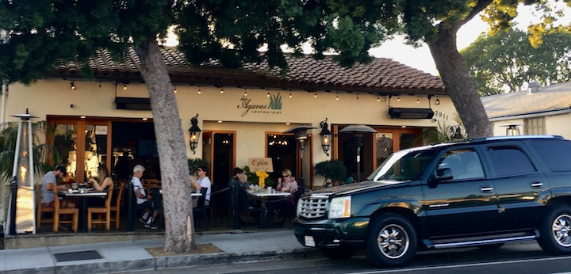

Explore Santa Barbara, CA
IST 263 Project Created by Celine Rivera
Dining with a View!
There are many great food places and options to try when in Santa Barbara. There are Asian restaurants, Italian restaurants, Hawaiian steakhouses, Indian restaurants, cafes, smoothie joints, Mexican taquerias, French bistros, coffeehouses, and more to try!


My Favorite Restaurants
Image Below: Enterprise Fish Co., Seafood Restaurant
Due to Santa Barbara being located right on the central coast of California, you know we have a fantastic local seafood restaurant! The Fish Enterprise has been a local favorite for 37 years now, serving fresh and whole foods made from scratch every day. There are many options such as fresh lobster, clam chowder bread bowls, fresh steamed clams, and oysters; you name it! My favorite thing to grab before leaving the restaurant is always the fresh saltwater taffy!
Image Below: Los Agaves, Mexican Restaurant

Santa Barbara is an old Spanish style town, covered with some of the best, most authentic Mexican restaurants. My all-time favorite place to eat at is Los Agaves. This award-winning restaurant is always the first place I stop when I am in town. Their menu items include fresh ceviche, molcajetes, fajitas, tacos, homemade sopes, and so much more! My mouth is drooling just thinking about this place! This place will always be my hand down favorite restaurant in town!